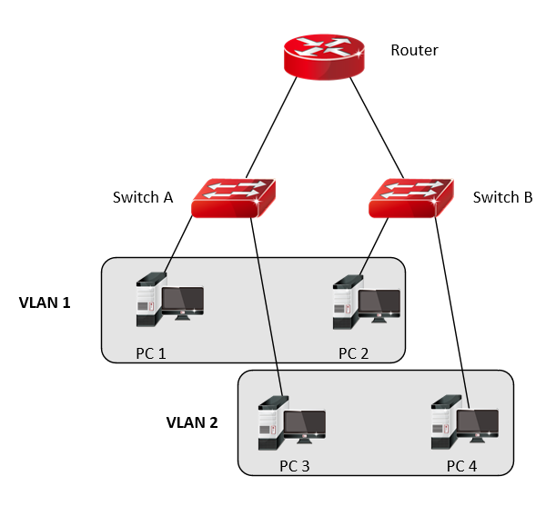
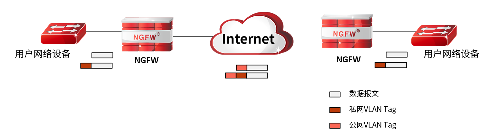

VLAN
VLAN（Virtual Local Area Network，虚拟局域网）是一种从逻辑上将局域网细分的技术。一个VLAN即一个广播域；在二层网络中，同一VLAN互连互通，不同VLAN间相互隔离。要实现VLAN间的通信，需通过三层路由技术。
VLAN划分不受物理位置限制，同一VLAN中的主机可以连接在同一交换机，也可连接在不同的交换机上。如下图所示，PC 1和PC 3，虽然都连接了Switch A，但是分别划分到了VLAN 1和VLAN 2中，所以PC 1和PC 3不能直接通信。

VLAN虚接口是VLAN内所有设备对外通信的出口。其命名方式为“vlan.”加上四位VLAN的ID组成，如“vlan.0009”。
QinQ
NGFW可用的VLAN数量为4094个，为解除城域网中可用VLAN数量的限制瓶颈，NGFW支持在交换模式的接口上启用QinQ功能以扩充VLAN数量。
QinQ（也称Stacked VLAN或Double VLAN）技术是对IEEE 802.1Q（即VLAN）的扩展，是IEEE在802.1ad标准中定义的。
QinQ是一种简单的二层VPN隧道（VLAN-VPN）技术，QinQ报文共有2层的VLAN通过Tag，包括用户网络（私网）的内层VLAN Tag和运营商网络（公网）的外层VLAN Tag。在运营商网络接入端为私网报文封装外层VLAN Tag，报文携带两层VLAN Tag穿越公网。在公网中，报文只根据外层VLAN Tag进行传输，用户的私网VLAN Tag则作为报文中的数据部分来进行传输。
通过该技术最多可以提供4094×4094个VLAN，用户可以规划私网VLAN ID，可以缓解日益紧缺的公网VLAN ID（4094个）资源，不会导致和公网VLAN ID冲突。QinQ技术为小型城域网或企业网提供一种较为简单的二层VPN解决方案。
NGFW支持在交换模式的接口上启用QinQ功能。QinQ功能的基本原理如下图所示，当开启交换接口的QinQ功能后，接口接收到报文时，无论报文是否带有VLAN Tag，NGFW都会为该报文打上本端口缺省VLAN的VLAN Tag。这样，如果接收到的是已经带有VLAN Tag的报文，该报文就成为双Tag的报文；如果接收到的是不带VLAN Tag的报文，该报文就成为带有端口缺省VLAN Tag的报文。
